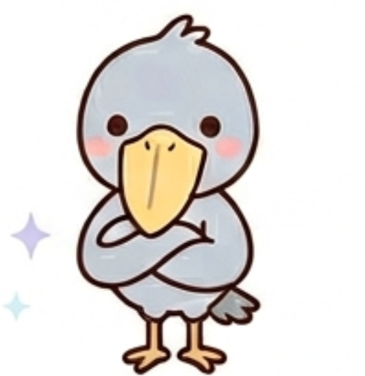

あなたのフレンドタイプは...

BFPD：ご意見番ハシビロコウ
あなたは、周囲の熱狂や一時的なノリに決して流されることのない、極めてクールで客観的な視点を持った「グループの知恵袋」です。自分から前に出て笑いの中心になろうとするエゴはなく、基本的にはじっと静かに周囲の会話に耳を傾けています。
内面には強いこだわりや独自のロジック（頑固さ）を秘めていますが、それを感情的に他人に押し付けることはありません。自分が不用意な発言をして場の空気を壊してしまうことを人一倍気にしているからこそ、まずは徹底して「聞き手」に回り、みんなの話を冷静に分析しています。
突飛なボケを仕掛けるタイプではありませんが、周囲が都合のいい綺麗事に流されそうになったり、話の辻褄が合わなくなってグダグダになったりした瞬間、ハッと目が覚めるような的確な指摘をボソッと放ち、場を本来のまともな空気へと引き戻すことができる、非常に頼りになる存在です。
友達から見たあなたは、ズバリ「普段は物静かに話を聞いているけれど、絶対に嘘や矛盾を騙せないグループのリアルな防犯カメラ」です。
みんなが「これめっちゃ良くない！？」「次これやろうよ！」とテンション高く盛り上がっているとき、あなたは輪の中から少し離れた席で、じっと動かずに話を聞いています。そして、会話の矛盾やリスクに気づいた瞬間、「でもそれ、普通に考えてスケジュール的に無理じゃない？」「本当に全員がそれやりたいの？」と、あまりにも的確で冷静な一言をボソッと放ち、場を一瞬で心地よい現実へと引き戻します。
その鋭すぎる着眼点に、友達は内心「うわ、ハシビロコウには全部バレてたｗ」「この人の前で安易な適当発言はできないな……」と、良い意味での緊張感を抱いています。
普段から省エネモードで多くを語らないため、「何を考えているか分からなくて少し怖い」と思われることもありますが、グループが間違った選択をしそうになったときは、あなたがその鋭い視点で一瞬にして軌道修正してくれるため、友達からは「最後の最後で一番頼りになる、絶対に騙せない賢い奴」として深くリスペクトされています。
自分の話ばかりを押し通そうとせず、他人の話を最後まで冷静に聞いているため、物事の本質やみんなの本音を誰よりも正確に把握しています。
お世辞やその場のノリに合わせた嘘をつかないため、友達が「本当のところ、どう思う？」と真剣に意見を求めたとき、最も客観的で、最も信用できる「本音の正論」を提示してくれます。
同調圧力に決して屈しないスタンスそのものがスタイリッシュであり、たまにボソッと呟く冷静な一言が、グループの会話をピリッと引き締める最高のアクセントになります。
あなたの鋭い視点と場を収める力は非常に有能ですが、スベることや空気が悪くなることを恐れるあまり、常に「批判（ツッコミ）」のポジションに引きこもりすぎると、時に「みんなのやる気を削ぐ、冷酷な評論家」になってしまう危険性があります。友達がピュアな情熱で「これやりたい！」と目を輝かせているときに、あなたがリスクばかりを指摘して冷や水をぶっかけ続けてしまうと、周りはあなたと一緒にいることに息苦しさを感じてしまいます。
周りがあなたの鋭い一言を受け入れているのは、あなたを友達として信頼しているからです。しかし、軌道修正（ツッコミ）だけで終わってしまい、自分からは一切アイデアを出さないスタンスを貫きすぎると、「ただ文句を言うだけのめんどくさい人」と距離を置かれてしまいます。
矛盾を指摘するだけでなく、「でも、ここをこう変えたら現実的に面白くなるんじゃない？」と、ほんの少しだけ歩み寄った代替案を一緒に提示してあげてください。あなたのその知性に「優しさのクッション」が加わったとき、あなたの言葉は誰もが納得せざるを得ない、グループ最高のナビゲーターとして愛されるようになります。